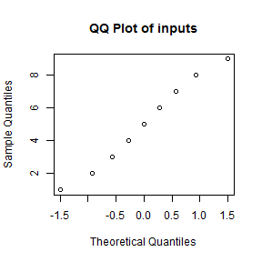

- The EDA is designed to take a list of numbers and do some quick Exploratory Data Analysis.
- It is designed particularly for Excel. Often I (and maybe you) will receive an Excel sheet, and the first thing I want to do is get a general picture about the columns.
- This can take some time to fire up R or write the proper functions in Excel.
- With the EDAinator, I can start it, select a row, copy it, and get my basic results.
The EDAinator
Quick Exploratory Data Analysis
James Bullis
What is the EDAinator?
What does the EDAinator do?
- The EDAinator will take a list of numbers, convert it to vector, and do the following:
- Compute summary statistics such as the mean, quantiles, etc.
- Generate a QQ plot
- Generate a Histogram
How does it work?
- Select some numbers from an Excel worksheet column.
- Copy them to your clipboard.
- Paste them into the Text box provided by the EDAinator.
- Gain a numerical epiphany regarding your data.
Give it a try
- Go here
- Entering: 1 2 3 4 5 6 7 8 9 in the text input will produce the equivalent output
## Min. 1st Qu. Median Mean 3rd Qu. Max.
## 1 3 5 5 7 9
 
The fine print
Limitations
- The EDAinator only takes numbers separate by spaces at the moment
- When pasting from Excel, the EDAinator only accepts columns
- The EDAinator only generates a QQ plot agains the normal distribution
Future Directions
- Add support for comma separated, tab separated, semi-colon separated values.
- Add tests for other distributions:
- Poisson
- Hypergeometric